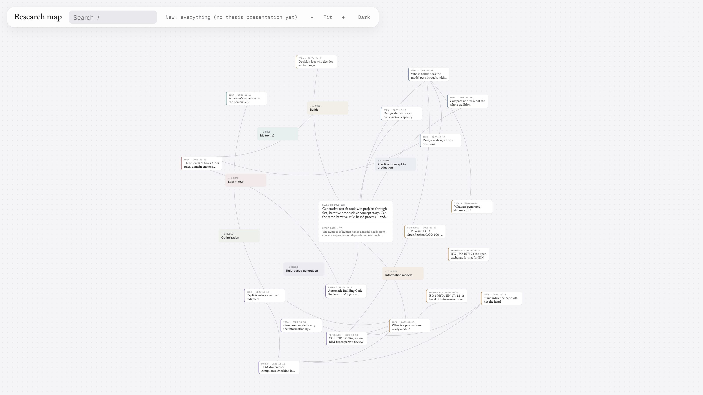
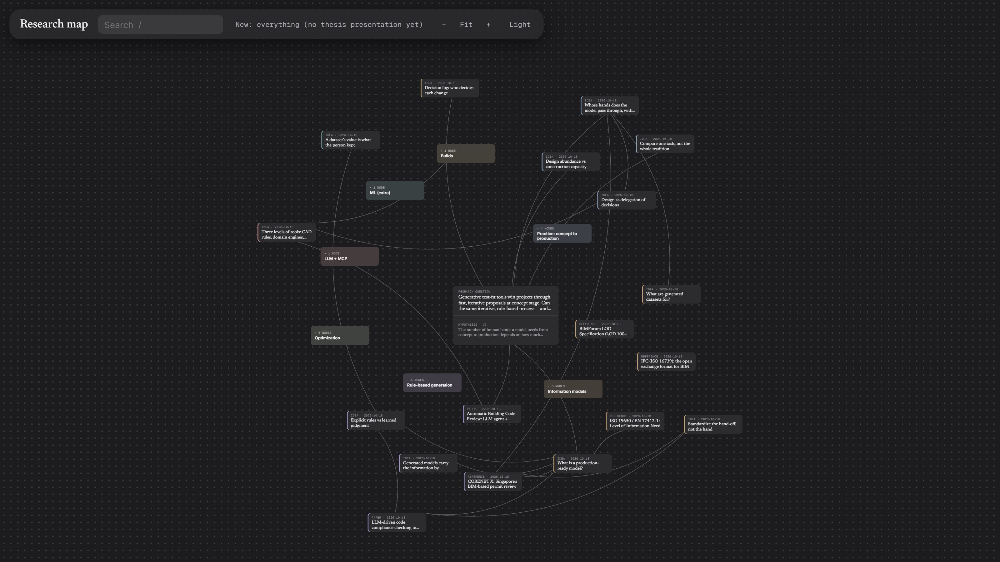

Rule-based generation produces information models that can be carried from concept into production.La generación por reglas produce modelos de información que se pueden llevar de concepto a producción.
Presentation 01 · MaCAD, IAACPresentación 01 · MaCAD, IAAC01
Ways of generating information models: the thesis question, and the tool built at work to test it.Formas de generar modelos de información: la pregunta de tesis y la herramienta hecha en el trabajo para probarla.
The case studyEl caso de estudio01


An ongoing project at work is the case study.Un proyecto en curso en el trabajo es el caso de estudio.
A tool being implemented at Gensler, built since Oct 13: Site → Brief → Rules → Massing, industrial first. It is the means of testing the hypothesis, not the subject.Una herramienta que se implementa en Gensler, construida desde el 13 de octubre: Sitio → Brief → Reglas → Masas, industrial primero. Es el medio para probar la hipótesis, no el tema.
LineageLinaje01
Each tool built once is reused to build a better one.Cada herramienta que se hace una vez se reutiliza para construir una mejor.
- Tool 1Herramienta 1
Plaza-Practiko
The first test fit.El primer test fit.
- →
- Tool 2Herramienta 2
MELI
A layout generator.Un generador de layouts.
- →
- TodayHoy
One core, many building types.Un núcleo, muchas tipologías.
Where the research startsDónde empieza la investigación01
How does architecture become computable?¿Cómo se vuelve computable la arquitectura?A framing question of the MaCAD class · first focus: rule sets that assemble datasets for machine learning.Una pregunta guía de la clase de MaCAD · primer enfoque: reglas que arman datasets para machine learning.
Research question · working versionPregunta de investigación · versión de trabajo01
Generative test-fit tools win projects through fast, iterative proposals at concept stage. Can the same iterative, rule-based process — and the information models it produces — carry on into design development and construction documents?Las herramientas generativas de test fit ganan proyectos con propuestas rápidas e iterativas en la etapa conceptual. ¿Puede el mismo proceso iterativo y basado en reglas, y los modelos de información que produce, continuar hacia el anteproyecto y el proyecto ejecutivo?
The number of human hands a model needs from concept to production depends on how much checking its tools can do. Rule-based tools make the passes more frequent and shorter, but the gap between prompt and production model keeps human judgment and signature in the loop.El número de manos humanas que necesita un modelo de concepto a producción depende de cuánto pueden revisar sus herramientas. Las herramientas por reglas hacen las pasadas más frecuentes y más cortas, pero la brecha entre el prompt y el modelo de producción mantiene el criterio y la firma humanos en el ciclo.
Evolving: this is presentation 01's version. Earlier versions stay in the record.En evolución: esta es la versión de la presentación 01. Las anteriores quedan en el registro.
The research mapEl mapa de investigación01


Seven groups around one question.Siete grupos alrededor de una pregunta.
Every link says why. Empty groups stay visible: they show where research is missing.Cada enlace dice por qué. Los grupos vacíos se ven: muestran dónde falta investigar.
Information modelsModelos de información01
What is a production-ready model?¿Qué es un modelo listo para producción?
Geometry + dataGeometría + datosthe app does itla app lo hace
Checkable codeNormativa revisableegress, fire, parkingsalidas, incendio, cajones
CoordinationCoordinaciónclashes, with MEPcolisiones, con instalaciones
AnalysisAnálisisstructural, energyestructural, energético
Specification, QAEspecificación, calidadspecialistsespecialistas
← a rule can check it · the research stops here← una regla lo revisa · aquí llega la investigación
Scales: BIMForum LOD 100–500 (geometry); ISO 19650 / EN 17412-1, Level of Information Need (what each stage asks for).Escalas: BIMForum LOD 100–500 (geometría); ISO 19650 / EN 17412-1, Level of Information Need (qué pide cada etapa).
State of the art · proposed, to be validatedEstado del arte · propuesto, por validar01
Theory of Constraints (Goldratt)Teoría de restricciones (Goldratt)
Speed up design and the bottleneck moves to building.Acelera el diseño y el cuello de botella pasa a la construcción.
Limitation: not yet tested in design practice.Limitación: aún sin probar en la práctica de diseño.
Jevons paradoxParadoja de Jevons
Efficiency tends to raise demand, not lower work.La eficiencia suele subir la demanda, no bajar el trabajo.
Limitation: says nothing about who does the work.Limitación: no dice quién hace el trabajo.
CORENET X (2023)
Permits on one IFC model, pre-checked by rules.Permisos sobre un modelo IFC, prerrevisado por reglas.
Limitation: only geometric rules; a person signs.Limitación: solo reglas geométricas; firma una persona.
Madireddy et al. (2025)
An LLM writes Revit scripts that check the code.Un LLM escribe scripts de Revit que revisan la norma.
Limitation: measured if scripts run, not if they are right.Limitación: midió si corren, no si aciertan.
Wan et al. (2025)
An LLM agent calls a deterministic code engine.Un agente LLM llama a un motor de revisión determinista.
Limitation: one test question; a preprint.Limitación: una pregunta de prueba; preprint.
Information modelsModelos de información01
The rule is easy; the hard part is the information.La regla es fácil; lo difícil es la información.
Modelled freelyModelado libre
- Everyone models differentlyCada quien modela distinto
- A stair is one volumeLa escalera es un volumen
- The rule cannot count risers ✗La regla no cuenta escalones ✗
- Rules place each elementLas reglas colocan cada elemento
- It carries its data by constructionTrae sus datos por construcción
- The rule checks it ✓La regla lo revisa ✓
Standardize the hand-off, not the hand: a standard is needed only where a machine reads the model, which is what IFC (ISO 16739) is for.Estandariza la entrega, no la mano: el estándar solo hace falta donde una máquina lee el modelo, y para eso existe el IFC (ISO 16739).
LLM + MCPLLM + MCP01
The agent does not take anyone's job; the tool it calls does the work.El agente no le quita el trabajo a nadie; el trabajo lo hace la herramienta que llama.
Level 3Nivel 3Generalist agentsAgentes generalistas
LLM + MCP: no architecture, but they know which tool to call.LLM + MCP: no saben de arquitectura, pero saben a quién llamar.
↓ calls↓ llama a
Level 2Nivel 2Domain enginesMotores de dominio
Generate and check a whole building type. JSON in, JSON out: this app's engine.Generan y revisan una tipología. Entra JSON, sale JSON: el motor de esta app.
↓ builds on↓ se apoya en
Level 1Nivel 1Rules inside CAD / BIMReglas dentro de CAD / BIM
Dynamo, Grasshopper, Solibri: one task, one software.Dynamo, Grasshopper, Solibri: una tarea, un software.
Practice: concept to productionPráctica: de concepto a producción01
Design as delegation of decisions.El diseño como delegación de decisiones.
Today: a lineHoy: una línea
- DesignerDiseñadordrawsdibuja
- SeniorSeniorredrawsredibuja
- ClientClienteasks for changespide cambios
- EngineersIngenierosredraw their partredibujan su parte
- ContractorContratistatakes off by handcuantifica a mano
- DesignerDiseñadorkeeps the criteriaconserva el criterio
- SeniorSeniorkeeps the exceptionsconserva las excepciones
- ClientClientechooses, earlier, with dataelige antes, con datos
- EngineersIngenieroskeep the signatureconservan la firma
- ContractorContratistachecks buildabilityrevisa lo construible
the model carries the information · each pass is a review, not a redrawel modelo carga la información · cada pasada revisa, no redibuja
Method · how the hypothesis is testedMétodo · cómo se prueba la hipótesis01
Compare one task, not the whole tradition.Comparar una tarea, no toda la tradición.
- 01InterviewsEntrevistas3–5 roles, their own steps3–5 roles, sus propios pasos
- 02BaselineLínea base1–2 real Gensler projects1–2 proyectos reales de Gensler
- 03Same task in the appLa misma tarea en la appby four ways of workingcon cuatro formas de trabajar
| StepPaso | ManualManual | RulesReglas | OptimizationOptimización | LLM + MCPLLM + MCP |
|---|---|---|---|---|
| SiteSitio | · | · | · | · |
| BriefBrief | · | · | · | · |
| RulesReglas | · | · | · | · |
| MassingMasas | · | · | · | · |
| AnalysisAnalysis | · | · | · | · |
Each cell: hands · passes · time · decisions delegated. Scope: site to rule-checked layout, industrial first. A qualitative case study.Cada celda: manos · pasadas · tiempo · decisiones cedidas. Alcance: del sitio al layout revisado, industrial primero. Un caso de estudio cualitativo.
Instruments and a predictionInstrumentos y una predicción01
The variable is not how many people, but who decides.La variable no es cuántas personas, sino quién decide.
- Who decidesQuién decideDesigner · Solve · optimizer · agentDiseñador · Solve · optimizador · agente
- In the project fileEn el archivoDecision logBitácora de decisiones
- The datasetEl datasetProposed vs keptPropuesto vs conservado
- It validatesValidaThe hypothesis · learned judgmentLa hipótesis · el juicio aprendido
Prediction · hands the tool removesPredicción · manos que quita la herramienta
IndustrialIndustrial
Offices (CAF)Oficinas (CAF)
fewer checkable rules, more taste · to be testedmenos reglas revisables, más gusto · por probar
One user on one machine is enough: the log travels with the file and adds each person who opens it.Basta un usuario en una compu: la bitácora viaja con el archivo y suma a cada persona que lo abre.
Limits and next stepsLímites y siguientes pasos01
What the tool cannot do, and what comes now.Lo que la herramienta no puede hacer, y lo que sigue ahora.
Cannot doNo puede
- Construction documentsProyecto ejecutivo
- Clashes without MEPColisiones sin instalaciones
- Structural, energy analysisAnálisis estructural, energético
- SignFirmar
Right awayDe inmediato
- Baseline: projects, interviewsLínea base: proyectos, entrevistas
- The decision logLa bitácora
- Code rules, citedNormativa, citada
ThenDespués
- Optimization, MCPOptimización, MCP
- IFC: does it reach BIM alive?IFC: ¿llega viva a BIM?
- Offices with CAFOficinas con CAF